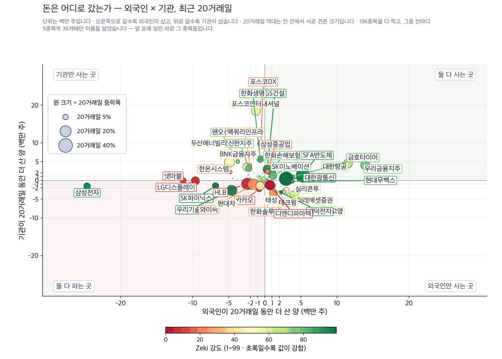

코스닥 시가총액 10위 가운데 5곳이 반도체 장비
2026년 9월 21일 · 값은 9월 18일 종가 기준입니다
신문에서 저희가 갖고 있지 않은 회사를 찾아, 왜 값을 할 수 있는지 숫자로 적습니다.
코스피 6,894.23 (+2.66%) | 코스닥 827.12 (+0.60%) | 나스닥 종합 26,522.54 (+0.39%) | S&P 500 7,650.50 (+0.17%) | Zeki 신호등 노란불 |

Zeki 신호등은 시장 국면을 7가지로 재서 하나로 줄인 것입니다. 초록불은 매수 우위, 노란불은 관망, 빨간불은 매수 자제입니다. 코스피는 노란불이고 7가지 중 6가지를 지났습니다. 코스닥은 2가지에 그쳐 빨간불입니다.
코스피 대기 · 코스닥 제외 — 신호등이 뜻하는 자세입니다.
간밤 뉴욕은 조용했습니다. 나스닥 종합은 0.39% 올라 26,522선에서 마쳤고, S&P 500은 0.17% 올랐습니다. 서울은 뉴욕이 닫힌 뒤에 열립니다. 서울 증시는 이 값에서 출발합니다.
지금 할 일
오늘 할 일 셋
연초 코스닥 시가총액 10위 안에 반도체 장비·부품 회사는 한 곳도 없었습니다. 9월 18일 기준으로는 5곳입니다. 제약·바이오가 앉아 있던 자리입니다. (한국경제 9월 21일자)
- 삼성전자와 SK하이닉스의 올해 설비투자 전망 합계는 117조원입니다. 작년보다 56% 많습니다. 장비 회사의 매출은 이 돈을 따라갑니다.
- 저희 기준 4가지를 다 넘은 곳은 PSK홀딩스(031980) 1곳입니다. 20거래일 동안 48.74% 올랐고 Zeki 강도는 96입니다. 외국인과 기관이 같은 기간에 함께 샀습니다.
- 같은 지면에 다른 이야기도 있습니다. 스탠리 드러켄밀러는 9월 10일 AI 투자를 6개월 전의 20%로 줄였다고 밝혔습니다. 그가 22일 두산에너빌리티 경영진을 만납니다.
먼저, 이번 주 경제
| 날짜 | 무엇을 보는가 | 넘으면 어떻게 되는가 |
|---|---|---|
| 9월 22일 | 드러켄밀러와 두산·두산에너빌리티 경영진 회동 | 에너지 설비에 실제 돈이 들어오면 발전설비 종목의 근거가 확실해집니다 |
왜 그런가
기사에서 찾은 종목
후공정 장비
전공정이 끝난 뒤에 후공정이 따라오던 순서가 깨졌습니다. HBM과 AI 가속기 수요가 빨라지면서 패키징과 테스트 설비가 먼저 모자랍니다. 그래서 후공정 장비 회사의 주문이 앞당겨졌습니다.
판단 — 4가지를 모두 넘은 유일한 종목입니다. 20거래일 동안 48.74% 올랐고 Zeki 강도는 96입니다. 외국인과 기관이 같은 기간에 함께 샀습니다. 9월 18일 종가는 고점보다 4.3% 낮을 뿐입니다. 확인 신호 — 159,900원 위를 지키면서 하루 거래량이 50일 평균 208,503주를 넘는 것입니다. 철회 기준 — 그 값을 밑돌고, 외국인이 20거래일 순매수에서 순매도로 돌아서는 것입니다. |
판단 — 20거래일 동안 11.87% 올랐지만 Zeki 강도는 82로 90에 못 미칩니다. 9월 18일 종가는 고점보다 26.1% 낮습니다. 석 달로는 6.99% 내렸습니다. 확인 신호 — 외국인이 20거래일 순매수로 돌아서고 Zeki 강도가 90을 넘는 것입니다. 철회 기준 — 기관마저 20거래일 순매도로 돌아서는 것입니다. |
부품·소재
부품과 소재는 장비보다 늦게 법니다. 장비가 들어오고 가동률이 올라 웨이퍼 투입량이 늘어야 소모품 교체와 화학 소재 사용이 함께 늘기 때문입니다. 값이 아직 안 따라온 곳이 섞여 있는 이유입니다.
판단 — Zeki 강도가 97로 가장 높습니다. 20거래일 동안 9.46% 올랐고 기관이 207,643주를 샀습니다. 다만 외국인은 218,255주를 팔았고, 한 주로는 6.72% 내렸습니다. 확인 신호 — 외국인이 순매수로 돌아서면서 9월 18일 종가 243,000원 위를 지키는 것입니다. 철회 기준 — 기관이 20거래일 순매도로 돌아서는 것입니다. |
판단 — 20거래일 동안 20.74% 올랐습니다. Zeki 강도는 86으로 90에 못 미칩니다. 9월 18일 종가는 고점보다 31.3% 낮습니다. 확인 신호 — Zeki 강도가 90을 넘고 외국인이 순매수로 돌아서는 것입니다. 철회 기준 — 9월 18일 종가 186,300원을 밑돌고 기관이 순매도로 돌아서는 것입니다. |
판단 — Zeki 강도가 62로 이 명단에서 가장 낮습니다. 석 달로는 17.21% 내렸고 9월 18일 종가는 고점보다 33.2% 낮습니다. 기사의 줄거리는 맞지만 값이 아직 따라오지 않았습니다. 확인 신호 — 기관이 20거래일 순매수로 돌아서고 Zeki 강도가 80을 넘는 것입니다. 철회 기준 — 9월 18일 종가 28,150원을 밑도는 것입니다. |
전력 설비
AI 인프라가 늘면서 병목이 칩에서 전기로 옮겨 가고 있습니다. 드러켄밀러의 방한은 그 자리를 보러 오는 것으로 읽힙니다. 다만 그는 AI 투자 자체는 줄였다고 밝혔습니다. 두 사실을 함께 놓고 보셔야 합니다.
판단 — 20거래일 동안 16.92% 올랐지만 Zeki 강도는 53에 그칩니다. 외국인은 같은 기간에 4,904,491주를 팔아 저희가 본 종목 가운데 매도 5위입니다. 기관이 4,884,345주를 받았습니다. 회동은 예정일 뿐 투자 결정이 아닙니다. 확인 신호 — 회동 뒤 실제 투자나 수주가 공시되고, 외국인이 20거래일 순매수로 돌아서는 것입니다. 철회 기준 — 회동 뒤 아무 발표가 없고 9월 18일 종가 85,700원을 밑도는 것입니다. |
판단 — 20거래일 동안 34.42% 올랐고 Zeki 강도는 85입니다. 외국인은 237,669주를 팔았고 기관은 166,788주를 샀습니다. 9월 18일 종가는 고점보다 34.2% 낮습니다. 확인 신호 — Zeki 강도가 90을 넘고 거래량이 50일 평균을 웃도는 날이 이어지는 것입니다. 철회 기준 — 자회사 수주 발표가 없는 채로 9월 18일 종가 1,449,000원을 밑도는 것입니다. |
오늘 찾은 것, 한 장으로
오늘 사야 한다면 — 근거 확실 1곳: PSK홀딩스(031980)
| 테마 | 종목 | Zeki 강도 | 근거의 무게 |
|---|---|---|---|
| 후공정 장비 | PSK홀딩스(031980) | 96 | 근거 확실 |
| 후공정 장비 | 이오테크닉스(039030) | 82 | 확인 필요 |
| 부품·소재 | 티에스이(131290) | 97 | 근거 있음 |
| 부품·소재 | ISC(095340) | 86 | 확인 필요 |
| 부품·소재 | 원익QnC(074600) | 62 | 근거 약함 |
| 전력 설비 | 두산에너빌리티(034020) | 53 | 확인 필요 |
| 전력 설비 | 두산(000150) | 85 | 확인 필요 |
근거의 무게
4가지를 잽니다. 값은 9월 18일 종가, 수급은 9월 17일까지 20거래일 순매수 기준입니다.
| 종목 | ①20거래일 상승 | ②강도 90↑ | ③외국인 순매수 | ④기관 순매수 | 충족 | 근거의 무게 |
|---|---|---|---|---|---|---|
| PSK홀딩스(031980) | O | O | O | O | 4/4 | 근거 확실 |
| 이오테크닉스(039030) | O | X | X | O | 2/4 | 확인 필요 |
| 티에스이(131290) | O | O | X | O | 3/4 | 근거 있음 |
| ISC(095340) | O | X | X | O | 2/4 | 확인 필요 |
| 원익QnC(074600) | O | X | O | X | 2/4 | 확인 필요 |
| 두산에너빌리티(034020) | O | X | X | O | 2/4 | 확인 필요 |
| 두산(000150) | O | X | X | O | 2/4 | 확인 필요 |
기관·외국인은 어디로 갔나
9월 17일까지 20거래일 순매수입니다. 저희가 보는 종목 전체를 훑었습니다. 수급 자료는 위의 값보다 하루 뒤에 있습니다.


업종 — 값의 강세와 돈의 흐름을 나란히
| 순위 | 업종 | Zeki 강도 | 자금 순위 |
|---|---|---|---|
| 1위 | 석유와가스 | 90.3 | — |
| 2위 | 반도체와반도체장비 | 87.0 | 3 |
| 3위 | 생명보험 | 85.3 | — |
| 4위 | 건설 | 79.0 | — |
| 5위 | 핸드셋 | 72.0 | — |
| 6위 | 전기장비 | 71.7 | — |
돈이 먼저 온 곳 — 값은 아직입니다
| 업종 | 강세 | 자금 | 20거래일 |
|---|---|---|---|
| 은행 | 21 | 2 | +2,276,134주 |
| 손해보험 | 12 | 1 | +3,814,006주 |
| 반도체와반도체장비 | 2 | 3 | +734,165주 |
강세 순위 — Zeki 강도(12개월 가중)로 세운 순위입니다. 최근 5회차를 평균해 하루치 흔들림을 걷어냈습니다.
자금 순위 — 20거래일 순매수로 세운 순위입니다. 값이 아니라 돈이 들어온 양을 봅니다.
공동 순위 — 값이 같으면 같은 순위를 줍니다. 억지로 가르지 않습니다.
두 순위가 어긋나면 — 그 자리가 볼 만합니다. 돈이 먼저 오면 값이 아직인 것이고, 값이 먼저 세면 돈이 빠지는 중일 수 있습니다.
찾아낸 종목에 자금이 따라왔는가
기사가 맞아도 자금은 따로 봅니다. 거래량은 9월 18일 하루치를 그 종목의 50일 평균과 견준 값입니다.
| 종목 | 외국인 20거래일 | 기관 20거래일 | 거래량 / 50일 평균 |
|---|---|---|---|
| PSK홀딩스(031980) | +103,540 | +206,120 | 0.50 |
| 이오테크닉스(039030) | -271,528 | +352,986 | 0.49 |
| 티에스이(131290) | -218,255 | +207,643 | 0.42 |
| ISC(095340) | -540,838 | +616,702 | 0.38 |
| 원익QnC(074600) | +156,386 | -347,971 | 0.72 |
| 두산에너빌리티(034020) | -4,904,491 | +4,884,345 | 0.84 |
| 두산(000150) | -237,669 | +166,788 | 1.83 |
20거래일 동안 외국인이 산 곳은 PSK홀딩스와 원익QnC뿐입니다. 나머지는 기관이 받고 외국인이 팔았습니다.
장중 체크리스트
- 개장 30분 — 외국인이 삼성전자를 계속 파는지 봅니다. 20거래일 동안 24,638,623주를 팔아 저희 명단에서 가장 큰 매도였습니다. 장비주는 그 반대편에서 올랐습니다.
- 장중 — PSK홀딩스가 그 값 위를 지키면서 거래량이 50일 평균을 넘는지 봅니다.
- 마감 30분 — 22일 회동을 앞두고 기관이 두산에너빌리티를 계속 받는지 봅니다.
이번 주에 확인할 것
이번 주를 가르는 숫자 하나는 설비투자 117조원입니다. 삼성전자와 SK하이닉스가 이 계획을 지키면 장비 회사의 매출은 2027년까지 이어집니다. 22일 회동에서 실제로 약속된 것이 있는지, 3년물 국고채가 연 4.00% 위로 올라서는지를 함께 보십시오.
출처: 한국경제 2026년 9월 21일자. 값은 9월 18일 종가, 수급은 9월 17일까지입니다.
이 다이제스트는 저희가 계산한 값으로 걸러낸 종목을 싣습니다. 개별 투자 자문이 아니며 특정 종목의 매수나 매도를 권하지 않습니다. 실린 등급과 순위는 모두 저희가 계산한 것이고, 모의 포트폴리오 기준입니다. 투자에는 원금 손실 위험이 따릅니다.
본 리포트는 정보 제공 목적이며 개별 투자 자문이 아닙니다. ZekiRex™ Apex KR는 10억 원 규모의 모의 포트폴리오를 규칙 기반으로 운용합니다. 실제 계좌도, 주문도, 사고판 일도 없습니다. 표시된 성과에는 수수료와 세금, 매매 시 가격 미끄러짐이 반영되지 않았습니다. 종목 자료에는 상장폐지된 회사가 빠져 있습니다. 살아남은 회사만 세는 셈이라 성과가 실제보다 높게 나옵니다. 과거의 성과는 미래를 보장하지 않으며, 투자에는 원금 손실 위험이 따릅니다.
This is the Rex Way, ZekiRex™